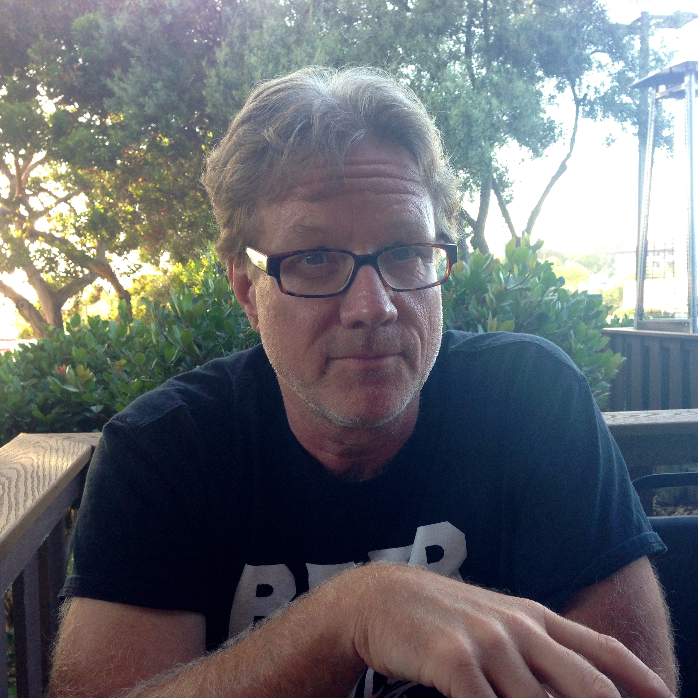
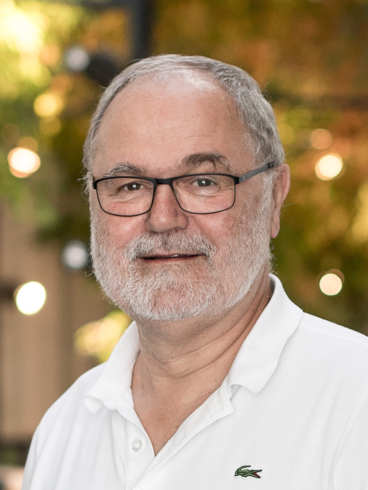
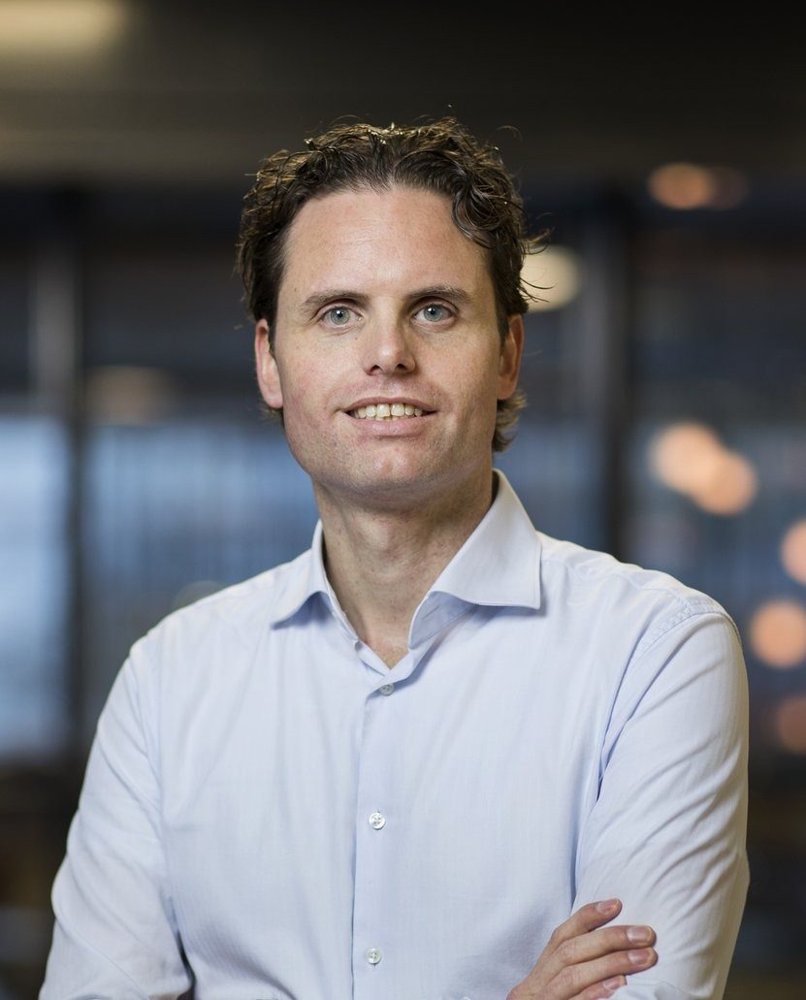
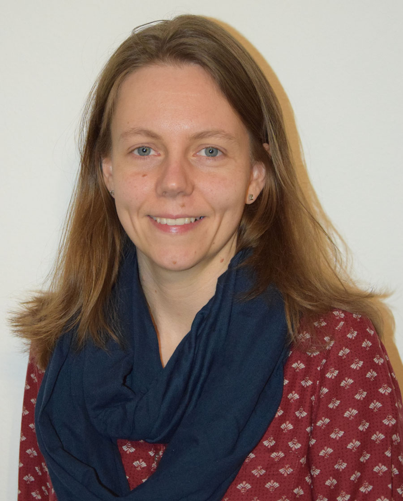
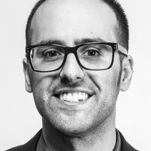
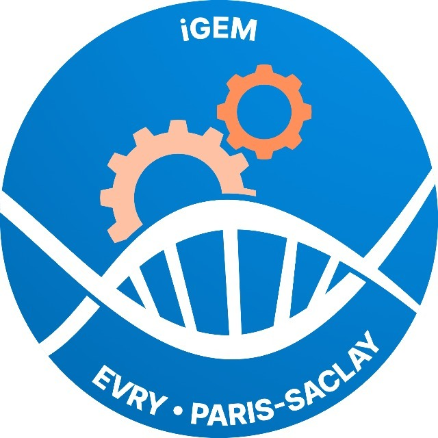

DISC'20
DISC'20
CELLS is a DISC 2020 workshop. Please see the DISC page for further information. The workshop will take place online. Attendance to the workshop is free of charge. Zoom links to the talks are provided after registration.
Scope
Scope
The workshop is intended to cover topics both from computer science and microbiology with a focus on computation emerging from microbiological units (bacteria, viruses, DNA, etc.) interacting with each other.
Topics include, but are not limited to: synthetic biology, bacterial computing, DNA computing, population protocols, Markov chains, modeling with cellular automata, infection models, and evolutionary models.
Program
Program
Talks will be held online on October 15th and 16th, 2020 (starting afternoon, Central European Summer Time).
Thursday, October 15, 2020 (CEST times):
- 5:30 PM. Jeff Hasty
- 6:30 PM. David Doty
- 7:30 PM. 30min break
- 8:00 PM. Discussion/Socializing
Friday, October 16, 2020 (CEST times):
- 2:00 PM. Kurt Mehlhorn
- 3:00 PM. Tom de Greef
- 4:00 PM. Yolanda Schaerli
- 5:00 PM. Tal Danino
- 6:00 PM. 30min break
- 6:30 PM. iGEM team Évry Paris-Saclay 2020
Registration
Local
Attendance to the workshop is free of charge. Please register via the DISC'20 page. Zoom links to talks will be provided on registration.
Speakers
Speakers
CELLS'20 speakers in order of appearance are:
Jeff Hasty (University of California, San Diego)
 Jeff Hasty received his Ph.D. in physics from the Georgia Institute of Technology in 1997, where he learned how to do science from his advisor Kurt Wiesenfeld. He was subsequently a postdoctoral fellow at Boston University, where he learned engineering from Jim Collins in the Applied BioDynamics Lab ('98-'01). Somewhere during his postdoctoral stay with Jim he mutated from a theoretical physicist into a hybrid computational/molecular biologist. He is currently at the University of California, San Diego, where he is a Professor in the Departments of Bioengineering and Molecular Biology, Director of the BioCircuits Institute, and Co-Director of the UC San Diego qBio Ph.D Specialization Program. He is considered a pioneer and leader in synthetic biology. His early career focused on tackling central impediments to the creation of an engineering discipline. He created genetic clocks to develop the underlying equations that drive circuit design, and used them to explore the coupling of gene circuits with their host genome. Faced with the inevitable noise of intracelluar gene regulation, he was the first to demonstrate how bacterial colonies can be engineered to function deterministically through the use of intercellular synchronization. He introduced the concept of “synergistic synchronization,” whereby two synchronization mechanisms couple colonies of bacteria at centimeter length scales. He used this concept to develop inexpensive biosensors that don't require complex optics. He has engineered periodic lysis of a bacterial colony such that population levels oscillate within a tumor microenvironment and release an encoded therapeutic. This design directly addresses the problem of systemic inflammatory response with programmed population control; since the colony is pruned after each oscillatory lysis event, the design mitigates an undesirable host response.
Abstract. For synthetic biology applications, intracellular variability is a major obstacle to the fidelity required for "programming" cells. A major theme in our research has been to investigate how determinism can arise from the synchronization of a large number of cells. I will review our basic approach to synchronization within the context of engineered bacteria that can be used to safely produce and deliver therapeutics from within solid tumors. Specifically, we have engineered a clinically relevant bacterium to lyse synchronously at a threshold population density and to release genetically encoded cargo. Following quorum lysis, a small number of surviving bacteria reseed the growing population, thus leading to pulsatile delivery cycles. We have extended this approach to small ecologies, whereby engineered periodic lysis can lead to ecological stability and generate in- teresting drug delivery schemes. Our current work explores how a small number of interacting species behave when constrained to grow on a surface as opposed to a well-mixed culture. It is known that non-hierarchical competitive dynam- ics, such as cyclical interactions, can sustain biodiversity. We have rationally designed a minimal microbial community with three strains of E. coli that cycli- cally interact through (i) the inhibition of protein production, (ii) the digestion of genomic DNA, and (iii) the disruption of the cell membrane. We find that intrinsic differences in these three major mechanisms of bacterial warfare lead to an unbalanced community that is, counterintuitively, dominated by the weakest strain. This work represents our first steps to probe the complexities of small engineered ecologies in environments that begin to approximate solid tumors.
David Doty (University of California, Davis)
 David Doty is an assistant professor of Computer Science at the University of California, Davis. He is broadly interested in problems at the intersection of physics, chemistry, biology, and computation. This does not mean the traditional "computation in service of natural science" (e.g., bioinformatics, computational chemistry, or molecular dynamics simulation). Rather, certain molecular systems — such as a test tube of reacting chemicals, a genetic regulatory network, or a growing crystal — can be interpreted as doing computation themselves... natural science in service of computation, if you will. He seeks to understand the fundamental logical and physical limits to computation by such means.
David Doty is an assistant professor of Computer Science at the University of California, Davis. He is broadly interested in problems at the intersection of physics, chemistry, biology, and computation. This does not mean the traditional "computation in service of natural science" (e.g., bioinformatics, computational chemistry, or molecular dynamics simulation). Rather, certain molecular systems — such as a test tube of reacting chemicals, a genetic regulatory network, or a growing crystal — can be interpreted as doing computation themselves... natural science in service of computation, if you will. He seeks to understand the fundamental logical and physical limits to computation by such means.
Abstract. Advances in software engineering and programming languages have enabled vastly complex, yet reliable, electronic computing systems. Imagine a world where smart molecules, controlled by programmable chemical reactions, achieve the same level of precise automated control over the configuration of matter at the molecular level.
Biology offers inspiring examples of molecules that can store and process information to construct and control the sophisticated nanoscale devices that regulate the machinery of life. Yet biology offers almost no effective design principles for manufacturing such molecules ourselves. Much of synthetic biology relies on "alien technology": evolved proteins that, had evolution not furnished them, we would not know how to design ourselves.
DNA nanotechnology offers a different approach, enabling design of smart molecular systems from first principles. Theory that combines mathematical tiling and statistical-mechanical models of crystallization has shown that algorithmic behavior can be embedded within molecular self-assembly processes. Previous DNA nanotechnology results had experimentally demonstrated algorithmic "tile" self-assembly with up to 22 tile types, creating patterns such as Sierpinski triangles and binary counters. Despite that success, many information technologies exhibit a complexity threshold -- such as the minimum transistor count needed for a general-purpose computer -- beyond which there is a qualitative increase in the power of a reprogrammable system, and it has not been clear whether the biophysics of DNA self-assembly would allow that threshold to be exceeded.
Here we report the design and experimental validation of a DNA tile set containing 355 single-stranded tiles, reprogrammable by tile selection to implement a wide variety of 6-bit algorithms, including copying, sorting, recognizing palindromes and multiples of 3, random walking, obtaining an unbiased choice from a biased random source, electing a leader, simulating Turing-universal cellular automata, generating deterministic and randomized patterns, and serving as a period 63 counter. The system is quite reliable: averaged across the 21 implemented circuits, the per-tile error rate is less than 1 in 3000.
The breadth, complexity, and reliability of this system demonstrates that fabrication of complex, atomically precise structures, using rationally-designed, bottom-up molecular programming, is a feasible long-term goal. Nanoscience need no longer take inspiration only from biology; it can take inspiration from computer science.
paper: https://www.nature.com/articles/s41586-019-1014-9
additional links related to paper: http://web.cs.ucdavis.edu/~doty/papers/#drmaurdsa
Kurt Mehlhorn (Max Planck Institute for Informatics)
 Kurt Mehlhorn is director emeritus at the Max Planck Institute for Computer Science and Senior Professor at the Saarland University. He works on algorithms in a broad sense, is the author of several books and more than 200 research papers. Many of his former students and postdocs are now professors. He received a number of awards, among them the ACM Theory and Practice Award and the Erasmus Medal of the Academia Europeae. He is co-founder of Algorithmic Solutions GmbH.
Abstract. Physarum is a slime mold that can apparently solve shortest path problems and build elegant and efficient networks. We report on recent work on understanding the network building capability and on the influence of noise on the network dynamics.
Tom de Greef (Eindhoven University of Technology)
 Tom de Greef studied Biomedical Engineering at Eindhoven University of Technology (TU/e, the Netherlands), where he received his MSc degree cum laude in 2004. He then started his PhD research at the TU/e department of Chemical Engineering and Chemistry, where he graduated in 2008 on a thesis on novel polymeric materials based on quadruple hydrogen-bonding motifs, supervised by professors E. W. (Bert) Meijer and Rint Sijbesma. He subsequently moved to the Computational Biology group at the TU/e department of Biomedical Engineering (TU/e) headed by Prof. Peter Hilbers, for postdoctoral research on self-assembling systems from a computational perspective. In 2010, he became assistant professor and in 2016 he was promoted to associate professor. In 2013, Tom de Greef was a visiting scholar in the group of Prof. David Weitz at Harvard University (Cambridge, USA), working on protein affinity screening using droplet microfluidics. In 2012 and 2013 the Netherlands Organization of Scientific Research (NWO) awarded him a VENI grant and an ECHO-STIP grant, respectively. In 2015 he received an ERC starting Grant and in 2016 an NWO VIDI grant. Tom de Greef is a core member of the Institute for Complex Molecular Systems (ICMS), a core member of the Dutch Gravitation program "Functional Molecular Systems" and a junior faculty member of the Gravitation program "Materials-Driven Regeneration". He received the 2017 Cram Lehn Pedersen prize in supramolecular chemistry, and in 2018 he was awarded a Microsoft PhD scholarship for the development of a DNA computer.
Abstract. The development of highly orthogonal molecular communication channels is a crucial step towards engineering artificial cell-scale systems. Here, we present a general and scalable platform entitled 'Biomolecular Implementation of Protocellular Communication' (BIO-PC) to engineer multichannel molecular communication networks between populations of non-lipid microcapsules. Our method leverages the modularity and scalability of enzyme-free DNA strand-displacement circuits to develop protocellular consortia that can sense, process and respond to DNA-based messages. We engineer a rich variety of biochemical communication devices capable of cascaded amplification, bidirectional communication, sender-receiver functions and distributed computational operations. Encapsulation of DNA strand-displacement circuits allows their use in concentrated serum where non-compartmentalized DNA circuits cannot operate. BIO-PC enables reliable execution of distributed DNA-based molecular programs in biologically relevant environments and opens new directions in DNA computing and minimal cell technology.
Yolanda Schaerli (University of Lausanne)
 Yolanda Schaerli is an Assistant Professor of Synthetic Biology at the Department of Fundamental Microbiology, University of Lausanne, Switzerland. Research in her laboratory uses a bottom-up synthetic biology approach to understand the mechanisms, properties, and evolution of gene regulatory networks, especially those involved in pattern formation.
Abstract. Synthetic biology has emerged as a multidisciplinary field that provides new tools and approaches to address longstanding problems in biology. It integrates knowledge from biology, engineering and mathematics to build – rather than to simply observe and perturb – biological systems that emulate natural counterparts or that explore alternative solutions beyond nature’s repertoire.
In my group we use this bottom-up synthetic biology approach to understand the mechanisms, properties and evolution of gene regulatory networks, with a focus on networks involved in spatiotemporal pattern formation.
In my talk, I will present our latest research on pattern-forming synthetic networks in populations of E. coli cells, including our work on the toggle switch and on multistable and dynamic synthetic circuits using CRISPR interference for precise temporal and spatial control of gene expression.
Tal Danino (Columbia University)
 Tal Danino is an Assistant Professor in the Department of Biomedical Engineering at Columbia University. His lab focuses on engineering bacteria for biomedical applications, with a particular emphasis on developing bacteria as a cancer therapy. Originally from Los Angeles, Tal received a Ph.D. in Bioengineering from UCSD in Jeff Hasty's lab, and was a postdoctoral fellow at the Koch Institute for Integrative Cancer Research with Sangeeta Bhatia. He is the recipient of awards including the NSF CAREER Award, Era of Hope Scholar Award, TED Fellow, and NIH Pathway to Independence Award. He directs the Synthetic Biological Systems Laboratory and is a member of the Herbert Irving Comprehensive Cancer Center and Data Science Institute.
Abstract. Over the past decade, microbiome research has revealed an astounding prevalence of bacteria in both healthy and diseased tissue. This natural presence of bacteria has renewed interest in programming microbes to sense and respond to disease states using approaches from synthetic biology. One particular focus is cancer therapy, where a multitude of studies have demonstrated selective colonization of solid tumors by bacteria, primarily due to reduced immune surveillance in tumor cores. In this talk, I will describe our laboratory's progress in building a multi-scale framework for engineering bacteria as a diagnostic and therapeutic agent for cancer. We use a methodology that bridges in silico computational modeling, in vitro characterization and platform development, and in vivo mouse models for cancer. We will highlight recent examples of bacteria programmed to sense and respond to tumor environments and release specific therapeutic payloads ranging from cytotoxic to immunomodulatory agents. This approach allows for the creation of engineered systems that intelligently sense and respond to diverse environments, ultimately adding specificity and efficacy that extends beyond the capabilities of molecular-based therapeutics.
iGEM Team Évry Paris-Saclay 2020
 The International Genetically Engineered Machine (iGEM) is an international competition where student teams develop synthetic biology projects over each summer and then present their research at the Giant Jamboree in October/ November. The team of University of Évry Paris-Saclay has been successfully competing at iGEM since 2012, addressing many social and scientific challenges through their projects, and winning medals and prizes. This year, their project tackles the problem of illegal wildlife trafficking and trade.
Abstract. The Rosewood species is the source of the most trafficked wildlife products worldwide. We are developing cheap, portable and easy-to-use biosensors that will accelerate the identification process and thus empower local authorities to identify and stop the logging of this species. Our biosensor uses engineered molecular machinery of the common gut bacterium (E. coli) to sense nucleic acid signatures specific to the Rosewood tree. We will demonstrate how to go from the design to the final application of the biosensors, identifying the trafficked Rosewood to the family, phylum, or the species level.
Committee
Committee
Matthias Függer, CNRS & LSV, ENS Paris-Saclay, Université Paris-Saclay & Inria
Manish Kushwaha, Micalis Institute, INRAE-AgroParisTech, Université Paris-Saclay
Thomas Nowak,
Université Paris-Saclay